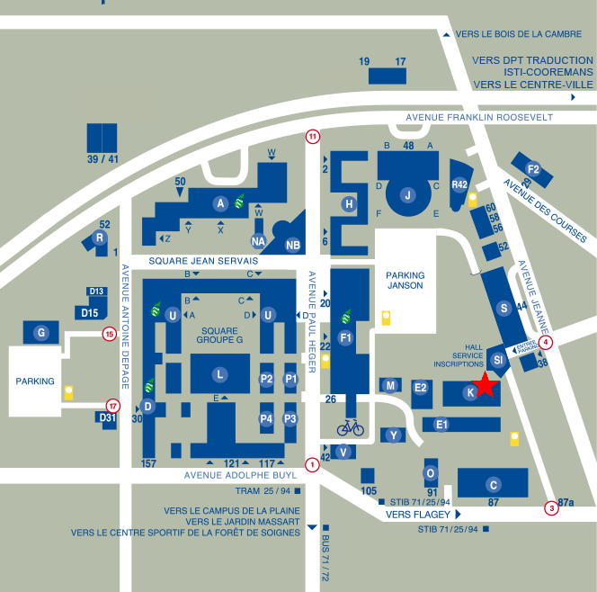

Drink && Eat @ FOSDEM 2017
Locations
Regular bars
Our regular bars offer a selection of fine belgian beers, sodas, juices and coffee. You can also have pastries and snacks all the day, as well as sandwiches starting from 11:30 AM.
Janson gallery
Accesible through the H Building/Janson external access, or the doors in the auditorium at mid-height
Campouce
Inside the F Building, in the middle of the campus
Water only
K-Building
Stay tuned ...

Prices
All our prices are in euros (€) including taxes.
Beers
- Leffe
- 0 €
- Jupiler
- 0 €
- Chimay
- 0 €
Drinks
- Coca
- 0 €
- Fanta
- 0 €
Snacks
- Mars
- 0 €
- Twix
- 0 €
Pastries (french name)
- Croissant
- 0 €
- Couque au beurre
- 0 €
- Couque aux raisins
- 0 €
- Couque au chocolat
- 0 €
Sandwiches
- Club (ham, cheese, salad, mayonaise)
- 0 €
- Cheese (cheese, salad)
- 0 €
- Curry Chicken
- 0 €
- Veggie (salad)
- 0 €
Empty bottles
Dozens of blue crates are awaiting the empty bottles you got from the bars all over the campus. Please leave there your beer and mate bottles, and use the regular trashes for other empty liquid containers. Please do not hesitate to tweet
@FosdemBar
in case you find a full crate somewhere.